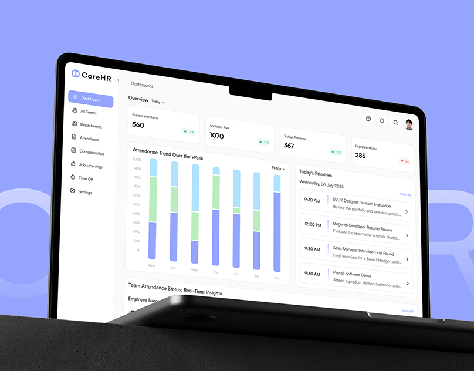
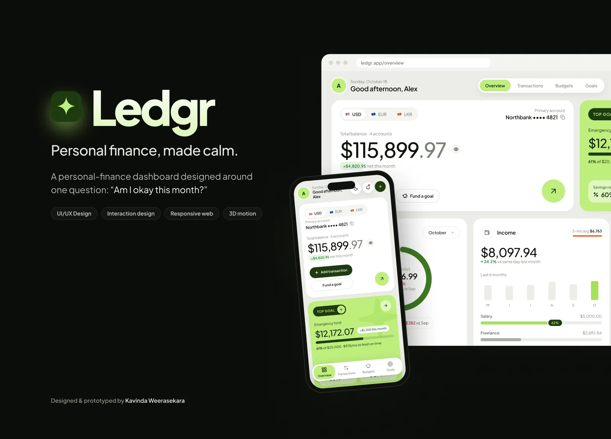
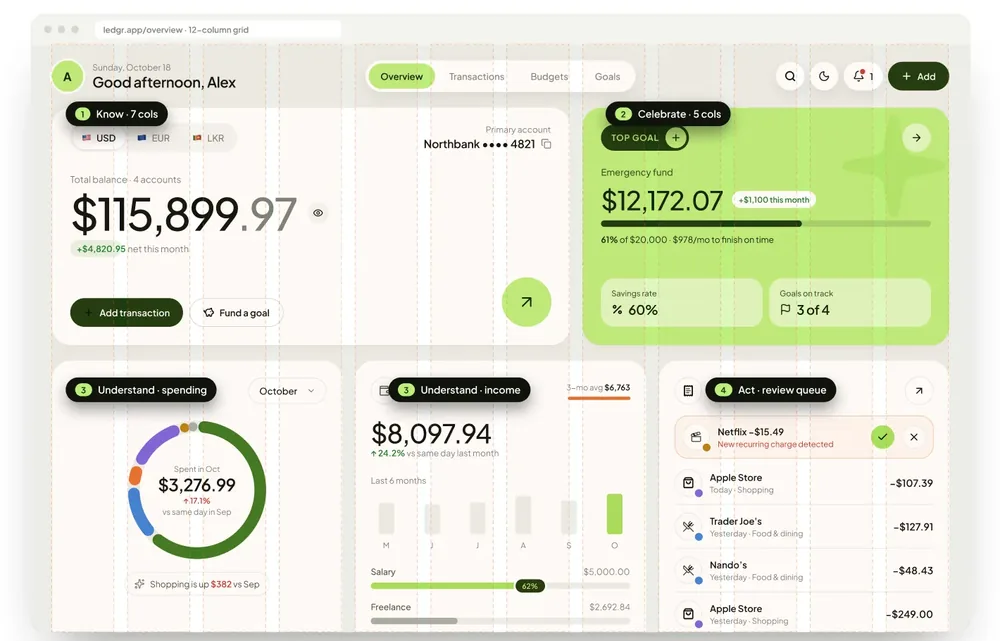
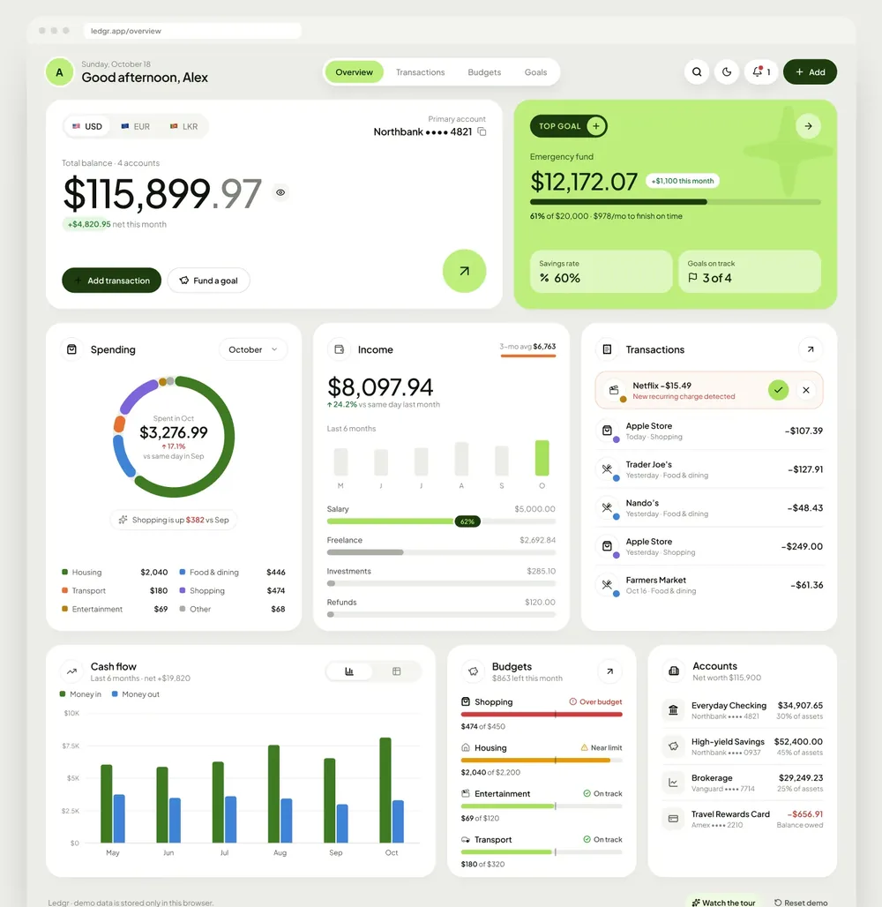
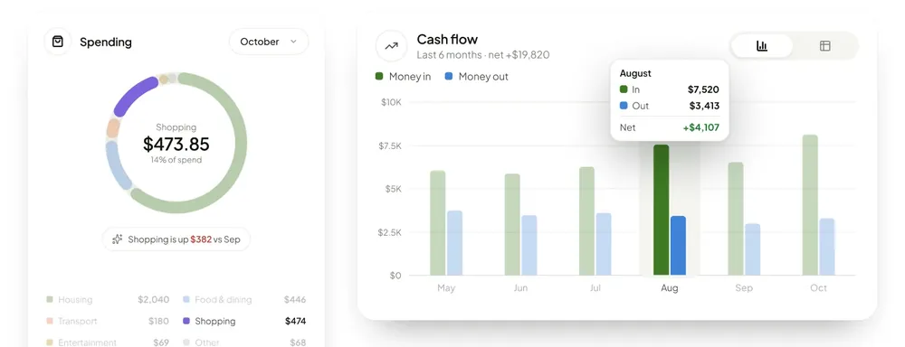
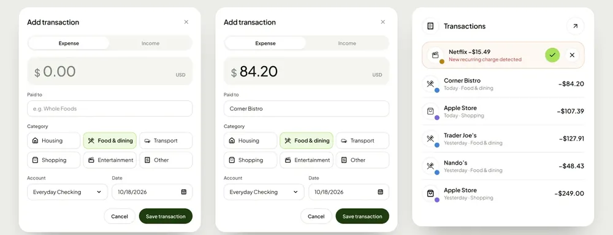
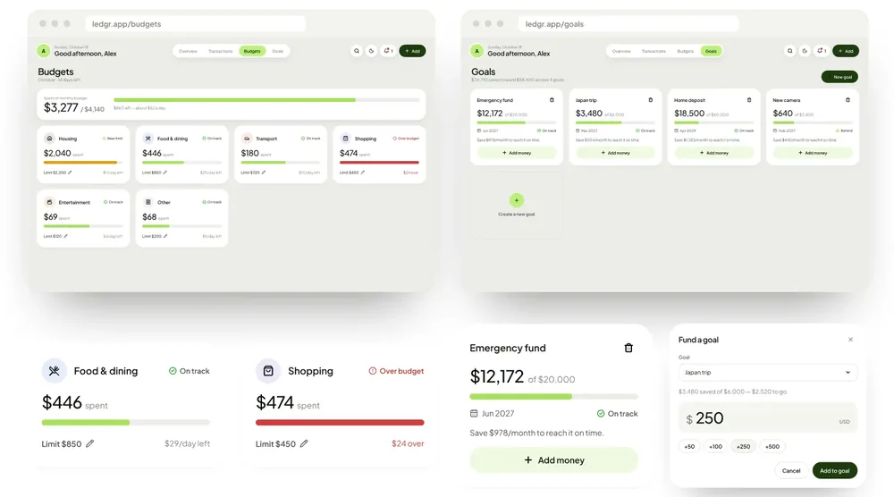
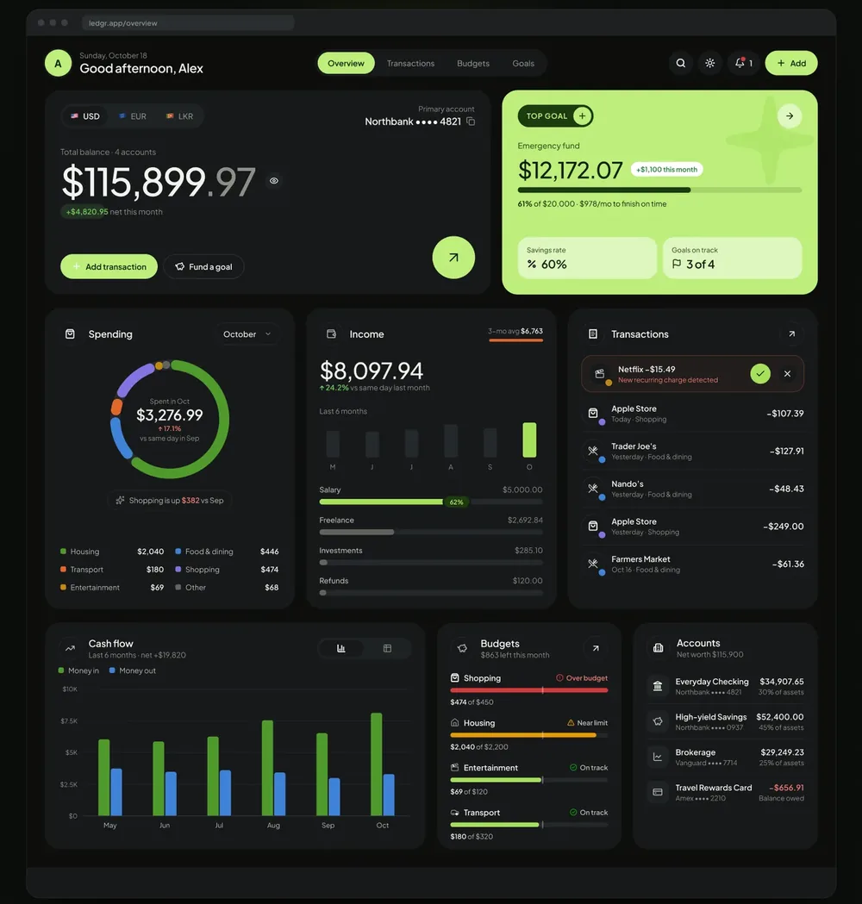
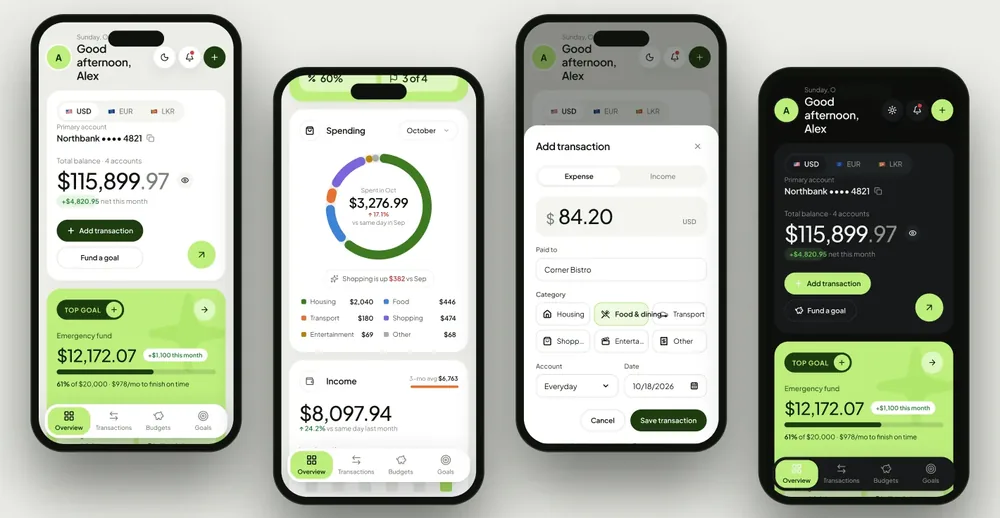

CoreHR
An HR management system for scheduling, tasks, performance tracking and employee engagement.
UI/UX case study · 2026
A responsive personal-finance dashboard MVP, designed around one question: “Am I okay this month?”

01 · Overview
Ledgr is a responsive personal-finance dashboard MVP. It brings balance, spending, income, budgets and savings goals into one quiet view, and turns raw numbers into plain-language answers.
The challenge
Finance apps show everything, so people understand nothing, and opening them becomes a source of anxiety.
The outcome
One hero number, honest comparisons, insights in plain language, and every key action within one tap.
02 · The problem
That’s the real question behind almost every visit to a finance app. Most dashboards answer it with a wall of charts. I framed four friction points to design against:
Every widget competes for attention, so the single number people care about gets lost.
Mid-month, half a month is compared with all of last month, so users always look like they’re overspending.
New subscriptions and recurring charges slip through unnoticed until they add up.
Manual entry is slow and fiddly, so people stop keeping their picture up to date.
03 · Who it’s for
Ledgr isn’t for spreadsheet power users. It’s for people who want a quick, reassuring check-in, and a nudge only when something needs attention.
Proto-persona · 28–40 · salaried + freelance income
Goals
Frustrations
Job to be done
When I open my finance app, I want to know straight away whether I’m on track, so I can either relax or adjust before it’s too late.
How might we…
04 · Design principles
These principles turned the problem framing into concrete UI decisions, and settled debates whenever a new widget wanted attention.
The total balance is the only oversized figure on the screen, and the cents are softened. Your eye reads “$115K” first, then the details: a clear answer before any analysis.
Lime is reserved for celebration: the savings goal closest to completion, active navigation and the primary shortcut. Spending it anywhere else would dilute the reward.
Mid-month comparisons use the same day of last month, never a half month against a full one. Category colours keep a fixed order, so a category’s colour never changes when filters do.
Ledgr finds the category that moved most and states it in one sentence. Past a +200% change it switches from a percentage to a dollar amount, because “+1,700%” means nothing to anyone.
New recurring charges are pulled to the top of the activity list for a one-tap decision. That’s the moment the app actually saves someone money.
05 · Information architecture
A flat structure keeps every screen within one tap. High-frequency actions (add a transaction, fund a goal, switch currency or theme) are global, not buried in pages.
Global
Core flow · log a transaction
06 · Layout & hierarchy
A 12-column grid gives every card a role: Know where you stand, Celebrate progress, Understand what changed, Act on it, then Plan ahead.

Desktop, tablet and phone layouts reuse the same cards, with spans changing per breakpoint.
Generous, consistent rhythm keeps a dense dashboard feeling calm.
Icon chip, title, one action. Every card has the same header, so it scans in a second.
07 · Colour
All colour is defined as role-based tokens, so light and dark themes switch in one place, and data colours never get borrowed for UI chrome.
--brand#BDEE7C--brand-strong#A7E05C--brand-deep#1D3B0F--ink#10140D--bg#ECEDE8--surface#FFFFFF--ink-2#4A5045--ink-3#7C8276Housing, Food & dining, Transport, Shopping, Entertainment, Other. Validated for colour-vision deficiency as adjacent pairs, separately for light and dark surfaces. A neutral “Other” keeps the donut’s first and last colours apart.
On track, Near limit and Over budget never rely on colour alone.
Surfaces #0C0D0B and #17191B, and lime becomes the primary action.
08 · Type & components
A geometric sans that feels modern and precise for numbers, with warmth in its curves. Large figures use proportional digits; columns use tabular figures so they line up.
09 · Key screen · Overview
Balance, progress, spending, income, activity, cash flow, budgets and accounts on one page, each card answering exactly one question.

10 · Understanding spending
Charts are there for people who want to dig in, with hover read-outs and a table view, but the headline is always written in plain language.

Hovering a category dims the rest and turns the centre of the donut into a read-out.
“↑ 17.1% vs same day in Sep”: comparisons always say what they’re compared with.
Each month shows in, out and the net result, colour-coded and labelled.
One toggle swaps the chart for an accessible table with exact values.
11 · Log a transaction
A big amount field first, because that’s what people remember. Then payee, then one-tap category chips. Clear errors, and smart defaults for account and date.

Errors that help
Validation runs on save, not while typing. Messages say what to do (“Enter an amount greater than zero”) and appear in a calm, tinted banner instead of a wall of red.
12 · Budgets & goals
Budgets show pace, status and what’s left per day. Goals turn savings into progress you can see, with the exact monthly amount needed to finish on time.

Budgets · from the prototype
$3,277 of $4,140 spent, with $863 left: about $62 a day for the 14 days remaining.
Goals · from the prototype
$34,792 saved toward $88,400 across 4 goals, with one-tap amounts to fund a goal.
13 · Dark mode
A hand-tuned dark theme, not an inverted one. Surfaces step up in lightness for depth, chart colours are re-validated against the dark background, and lime becomes the primary action colour.

Primary account · Northbank •••• 4821
Total balance · 4 accounts
$115,899.97
Top goal · Emergency fund · 61%
Primary account · Northbank •••• 4821
Total balance · 4 accounts
$115,899.97
Top goal · Emergency fund · 61%
14 · Responsive
On phones the same cards stack into one column, navigation moves to a floating bottom tab bar, and quick-add opens as a bottom sheet within easy reach.

15 · Accessibility
Money is personal and stressful. These details make sure Ledgr is legible, predictable and private for everyone.
Palette checked for CVD separation in both themes.
Statuses pair icon, label and colour; charts have legends.
Visible focus rings, a skip link, focus moves into dialogs and returns on close; Escape closes them.
Icon buttons, charts and progress bars are all labelled.
Animations are minimised when the OS asks for it.
One tap masks every amount, for checking your balance in public.
16 · Outcome & next steps
Ledgr shipped as a fully interactive, responsive prototype, not just static mockups, so the next step can be real usability testing.
What I learned
Good finance UX isn’t about showing more data. It’s about removing the anxiety of reading it. Prototyping in code surfaced details (like unfair mid-month comparisons) that static mockups would have hidden.
Full project
The complete project, with all screens and details, is published on my Behance profile.
Let's work together
I'm open to full-time roles and freelance projects. Drop me a line and I'll get back to you soon.